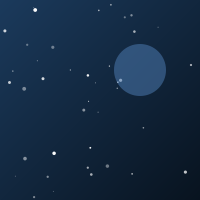
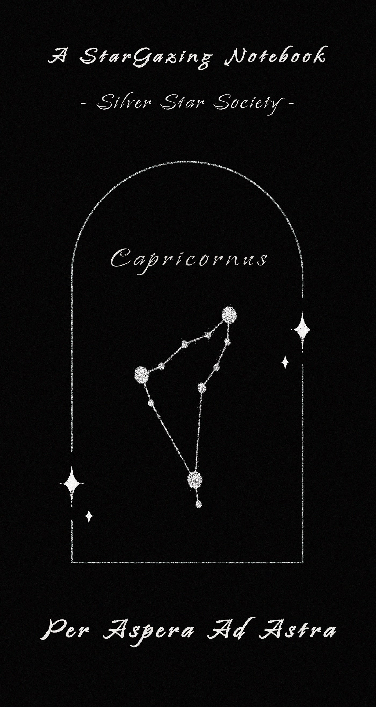
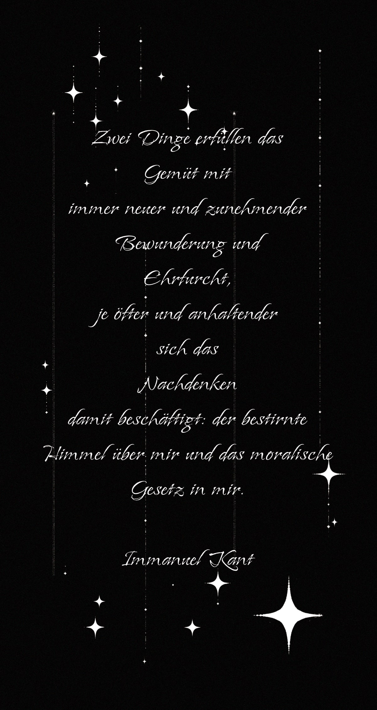
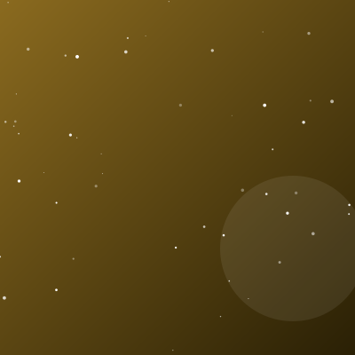
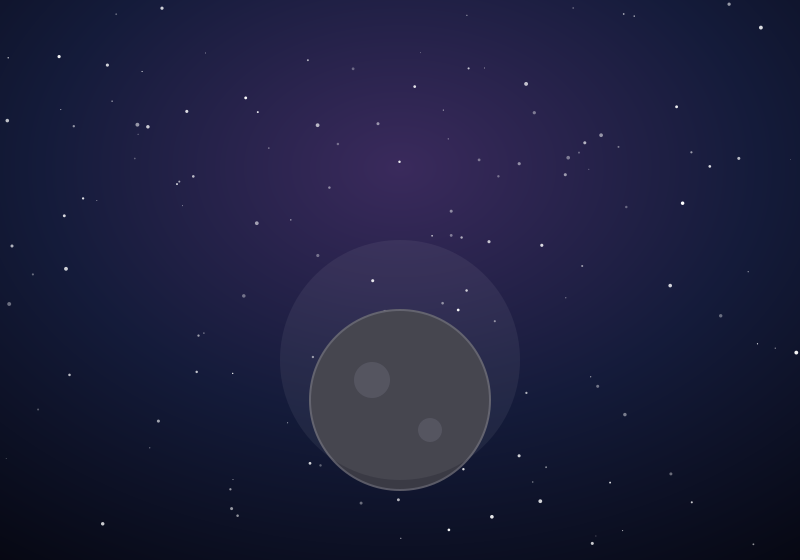
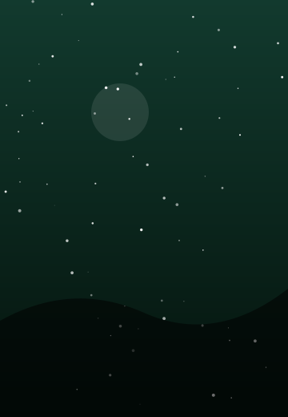
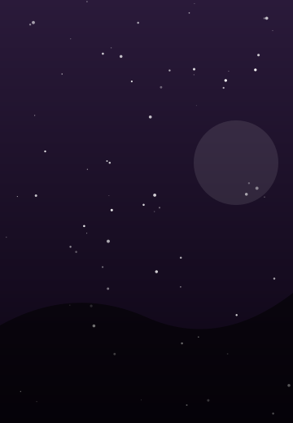

银星学会今年新推出手账本，已陆续的寄送到广大会员手中，请各位会员注意查收。

手账本 · 封面
手账本 · 背面
这张由学会成员速写的图像，展示了夜空中一颗划过的亮星及其轨迹。画面背景里那颗最亮的星，被记录者称为"引路星"——据说它只在特定纬度才会出现。



我们是一家专注于"说不清但确实存在"之事物的民间科研学会。我们相信每一个异常现象，都值得一次严谨的核实。
学会长期资助并派遣研究员，深入各地进行实地考察与档案核实。无论结果是否符合预期，我们都会留下完整记录。
不臆断 · 不炒作 · 可复核
受资助的考察者，需在任务结束后提交完整核实报告，并接受学会的复核。